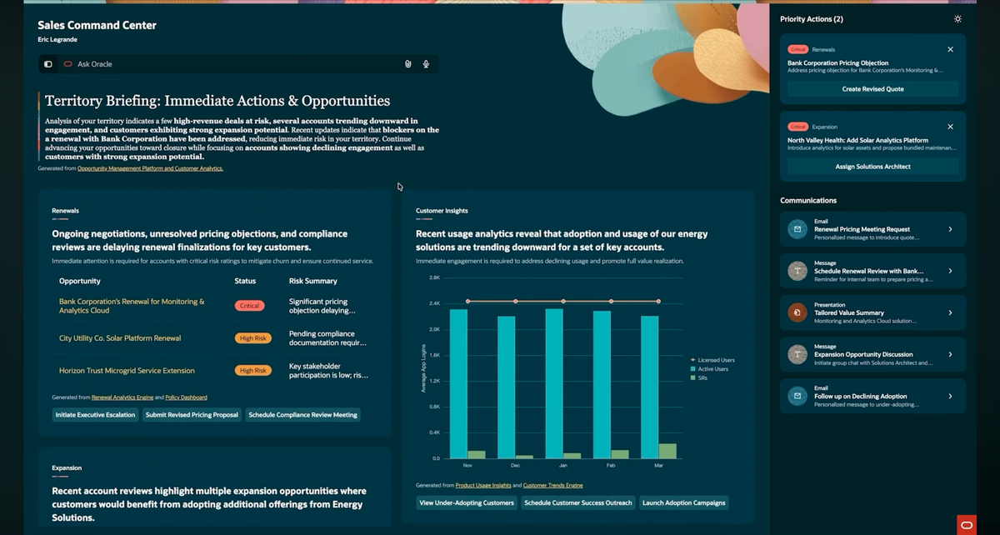
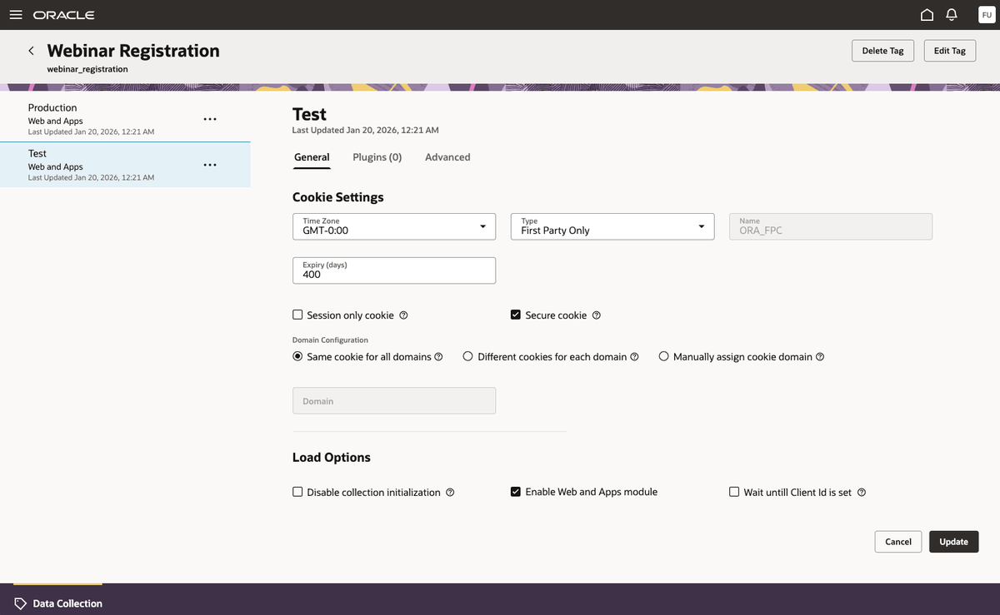
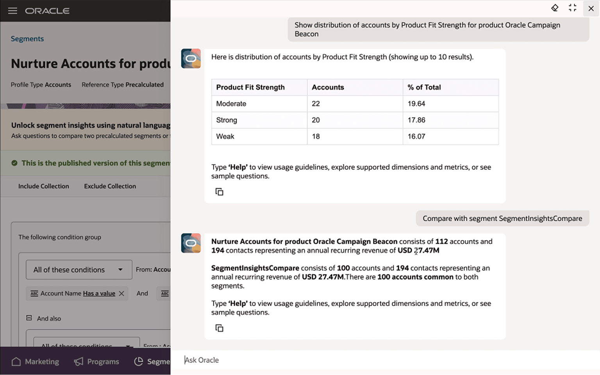

I'm a Senior UX Designer at Oracle based in Bengaluru. Over the past three years, my focus has been on untangling complex, data-heavy systems so the everyday user doesn't have to.
I care about asking the right questions upfront to understand user intent, business goals, and technical constraints. Once aligned, I move into fast prototyping to stress-test assumptions and iterate.
Built an AI agent that placed top 12 of 700+ teams in an internal hackathon
Drove the creation of a team-wide UI toolkit to standardise component usage across the marketing design team
Partnered with UX researchers to prototype an AI-driven accessibility solution for visually impaired users
Currently co-leading an upcoming UX event featuring industry experts
For my earlier projects from 2022 during my Bachelor's, explore my Behance profile . If you're curious, my final thesis explored interaction and multimodal feedback in VR.
Timeline
Where I've spent the last few years.
Oracle
2022 – Present · Bengaluru
May 2022: Two‑month UX Design Internship
July 2023: Joined full‑time as a UX Designer
October 2025: Promoted to Senior UX Designer
WTA Studios
UI/UX Design Intern · 2021
Anveshan
UI/UX Design Intern · 2021
Prishni
Graphic Design Intern · 2021
IIT Guwahati
2019 – 2023
Bachelor of Design, Department of Design · 8.59 CPI
At Oracle, I work within the CX Marketing suite, primarily on the Fusion Unity Customer Data Platform (CDP), a system that unifies customer data from disparate online, offline, and enterprise sources into dynamic 360-degree profiles for real-time personalization.
My work spans data-heavy projects across analytics dashboards, data transformations, and SQL editors, with a strong focus over the past year on conversational interfaces and agentic AI. I design interaction patterns that transition enterprise software from passive "systems of record" into proactive "systems of outcomes".
I've been the lead designer on multiple high-impact projects, some of which I owned solo from end to end. To design for complex technical domains, I build a working understanding of the underlying concepts myself, using tools like OpenAI Codex and Figma Make to prototype interactions quickly.
Focus Area 01
ML Model Lifecycle: From Hackathon Pitch to Shipped Agentic App
While designing dashboards to track ML model performance across the marketing funnel, my PM, a co-designer, and I saw how complex model setup was for marketers, despite being closest to the business scenarios. To solve this, we teamed up with an engineer to enter Oracle's AI agent hackathon. Together, we architected the multi-agent team structure, while I focused on the agent setup, prompt engineering trials, and visual storytelling for the pitch. Our concept advanced to the Global Finals (Top 12 out of 700+ teams), leading the proof-of-concept to be adopted into the core product roadmap, launched in production, and enhanced over the next two releases.
The resulting agentic app makes machine learning accessible to business users without data science expertise. A marketer describes their campaign objective, and the agent matches it with purpose-built predictive models, explains the recommendation with transparent reasoning, and automatically validates data readiness, compressing weeks of technical discovery into just a few clicks.

Focus Area 02
Real-Time Behavioral Data: Leading the End-to-End Experience
As the sole designer owning the real-time behavioral data pipeline end to end, I tackled a key bottleneck: marketers depended on web developers to capture digital activity like clicks, page views, and form submissions. I redesigned the setup into a self-serve experience, navigating complex tech stack constraints and validating the UX with users at key points throughout the process.
Setup Tracking→Define Triggers→Verify Live Data
We are now taking this further with AI assistance, where an agent suggests what to measure based on page content, while marketers point and click to refine. Their selections flow directly into downstream campaigns, removing the technical setup completely.

Focus Area 03
Audience Analytics: From Dashboards to Conversations
Across multiple projects, I developed a strong understanding of data visualization, learning to choose the right chart and interaction for each type of information. I also worked on another flavor of analytics, designing an in-context AI agent that helps marketers understand their audience composition through natural language and make better decisions.

Focus Area 04
Data Workflows: Balancing Technical Depth and Simplicity
Highly technical users often prefer code, while less technical users need intuitive visual tools. Across data transformation and SQL editing workflows, my core challenge was designing interfaces that mirror the mental model of how an SQL query is written, pairing visual simplicity with system guardrails to prevent security and governance risks.
Continuous Learning
Completed coursework in Machine Learning (Stanford / DeepLearning.AI), Prompt Engineering (IBM), and SQL (Kaggle) to adapt quickly to technical domains.
Leverages OpenAI Codex skills with Figma MCP and Figma Make for day-to-day context gathering and rapid prototyping.
Confidentiality & Walkthrough
Because these enterprise products are proprietary and under NDA, detailed mocks and production flows cannot be published publicly. I am always happy to discuss my design thinking, component systems, and workflow architectures in a 1-on-1 walkthrough .